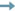

LATEST NEWS
My Visit of the world's largest trade fair and event highlight for interactive games and entertainment.
(08.21.2012)
Award ceremony of the European Games Award 2012
in Cologne.
(08.14.2012)
Participation in the event of the FFF Bayern and the firm
SKW Schwarz.
(06.15.2012)
CV 
Academic training
Study
- 2011 - 2012
University of Applied Sciences Augsburg
 Interactive media systems (game development) - Master of Arts - 2006 - 2011
University of Applied Sciences Augsburg
Interactive media - Bachelor of Arts
Internships
- 03.18.2013 - 09.17.2013
Chimera Entertainment GmbH - independent game developer - 09.15.2008 - 03.15.2009
Kreativkombinat GbR - advertising agency - 02.13.2006 - 08.18.2006
HRT Marketing-Full-Service Agentur - advertising agency - 08.15.2005 - 11.11.2005
Ostenrieder - Design&Marketing - advertising agency
Workshops and Soft Skills Training
Workshops
- 06.26.2008 - 06.28.2008
Emotional Gaming
Workshop and symposium on »Emotional Gaming« - 04.30.2007 - 05.05.2007
GRAF11ST - 11th International Istanbul Graphic Design Week.
Design and implementation of posters.
Soft Skills Training
- 02.25.2008 - 03.01.2008
Winteruniversität - Outdoor training, active learning and experiential education. - 04.21.2007 - 04.22.2007
Erlebnistage - Outdoor training, active learning and experiential education.
Social education
Community service
- 01.05.2004 - 10.31.2004
Janitorial work and customer service in the youth hostel Wittdün/Amrum.
Education
Education
- 2001 - 2003
College of Further Education Kempten
Social field - 2000 - 2001
Middle School Füssen
Fine arts & creative field - 1995 - 1999
High School Füssen
Modern languages - 1990 - 1994
Elementary School Roßhaupten
Professional internships
- Nursing assistants - training
County hospital Füssen - Kindergarten
Roßhaupten